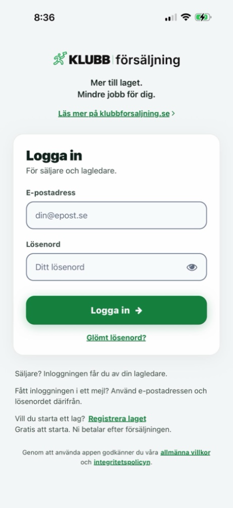
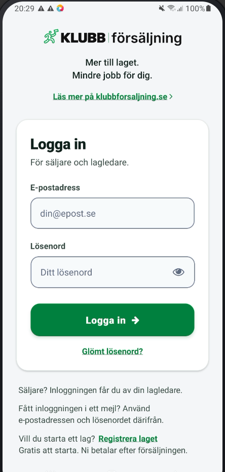

Milstolpe 1, teknikval
En kodbas i stället för två appar
Alternativen var två native-appar, Swift för iPhone och Kotlin för Android, eller React Native med Expo.
Jag valde React Native. Webben var redan skriven i React och TypeScript, så appen kunde dela server, typer och regler med webben, och en ändring kan gå ut på båda plattformarna samma dag.
Priset är att jag kommer längre från plattformarna. Det jag har gjort nativt är konfigurationen: språk och behörigheter i Info.plist och Android-manifestet, adaptiv ikon, kant till kant och signering.

